Informe del Préstamo Hipotecario Procrear
Este proyecto lo desarrollé con mis propios datos; son los que fui acumulando mes a mes. Decidí hacer esto, ya que me había imaginado posibles soluciones para poder desocuparme lo antes posible del préstamo, y dada la mala experiencia que tuve, y mi pasión por darle historia a los reportes, decidí compartir mi experiencia juntando ambas cosas. Antes de llevarlo a este reporte, lo hice en Excel y me dio muchas ganas de probar qué tal quedaba en un reporte. De paso, la misión del mismo es que, al publicarlo, si alguien más tuvo la misma experiencia y quiere ver cómo se desarrollaría a la larga su crédito, se contacte conmigo y verlo sin compromiso.
Links del programa, banco y coeficiente casa propia.
Banco Hipotecario - Programa Procrear.
Programa Procrear - Coeficiente Casa Propia.
Estructura del Informe
- Resumen:
- ⭐Aquí muestro en una división de pantalla por colores cómo era el crédito originalmente (color naranja)
- ⭐Cómo es el crédito habiendo realizado adelantos (celeste)
- ⭐Y, por último, en el medio, cómo queda el crédito con información de ambos lados, con las cuotas pagadas sin adelantos más las cuotas adelantadas.
-
Histórico:
- ⭐Se muestra cómo evolucionaron las cuotas con el paso del tiempo; la misma aumenta con el coeficiente casa propia.
- ⭐Está el porcentaje de aumento de los últimos 6 meses.
- ⭐El porcentaje de aumento histórico.
- ⭐Muestra en un gráfico de anillos cuántas cuotas he pagado y cuántas me faltan.
-
Proyección:
- ⭐Se muestra en proyección cómo aumentarían las cuotas teniendo en cuenta el porcentaje de aumento de los últimos 6 meses.
-
Diferentes escenarios:
- ⭐Se puede observar 4 escenarios, los cuales se me ocurrió hacer en caso de abonar adelantos.
- ⭐Cada escenario tiene una breve descripción de qué se trata.
- ⭐Un slash para activar/desactivar el escenario y ver cuántas cuotas debería pagar con ese esquema, los años que me tardaría en cumplirlo y una fecha estimada en que finalizaría el préstamo.
- ⭐Si se activan todos los escenarios con el slash del medio, se puede apreciar que, de forma dinámica, se seleccionaría el mejor escenario a elegir; en caso de que algo cambie, siempre se seleccionará el que lleve menos cantidad de años.
- ⭐Si ingresamos a cada escenario, nos lleva a una hoja en la cual nos detalla el plan a seguir, cuánto gastaríamos para completarlo y cuánto sería el valor de la cuota a pagar ese mes.
- ⭐¿Cuánto representa en cantidad las cuotas a abonar?
- ⭐Por último, un gráfico de barras, el cual indica cada cuánto tenemos que hacer adelantos, la cantidad de adelanto representado en cuotas, y podemos observar de mejor manera cómo va incrementando el valor de la misma.
-
Glosario - FAQ:
- ⭐Se agregó una tabla que se divide en dos columnas: identificador y el detalle de qué significa ese identificador.
- ⭐Se agregó una tabla con preguntas y respuestas.
- ⭐Se agregó un texto breve contando mi historia con el crédito.
El reporte se divide en tres partes: la primera, segunda y tercera corresponden a las visualizaciones, y la cuarta es un detalle del trabajo realizado.
- Video de YouTube
- Desde la web de Power BI (para aquellos con cuenta paga, permitiendo la interactividad).
- Mediante imágenes estáticas.
- Trabajo Realizado.


El trabajo realizado en este reporte consta:
-
Creación del crudo:
- Se creó un crudo con 4 columnas:
- Fecha ➡️ La fecha se creó para que haya datos del mes; cabe aclarar que no es la fecha en la cual se produce el débito automático.
- Cuotas ➡️ Se colocaron la cantidad de cuotas del préstamo, de la cuota 1 hasta la 360.
- Valor ➡️ Se colocó el valor de la cuota que llegaba por mail.
- Adelanto ➡️ Se pone el valor del adelanto realizado.
- Medidas:
Medidas para sacar la cantidad de años, habiendo previamente sumado la cantidad de cuotas, teniendo en cuenta que es 1 cuota por mes.
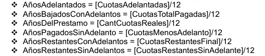Cuenta la cantidad de cuotas que hay, en caso de adelantos, se multiplica por 3, ya que se observo que cada cuota adelantada baja 3 aproximadamente.
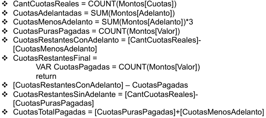Se crea medida para sacar la última fecha en la que se cargó la cuota mensual.
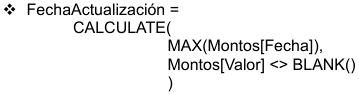Medidas para calcular el monto de lo que se va pagando, ya sea con adelanto, sin adelanto o ambas.
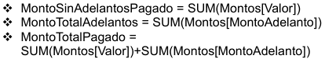Medida que sirve para calcular el porcentaje de aumentos entre los últimos 6 meses de cuota.
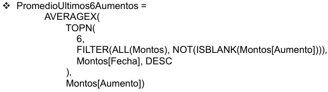Estás medidas sirve para poner seleccionar dinámicamente cual es el mejor escenario de los 4, teniendo en cuenta la es la menos cuotas hay que pagar.
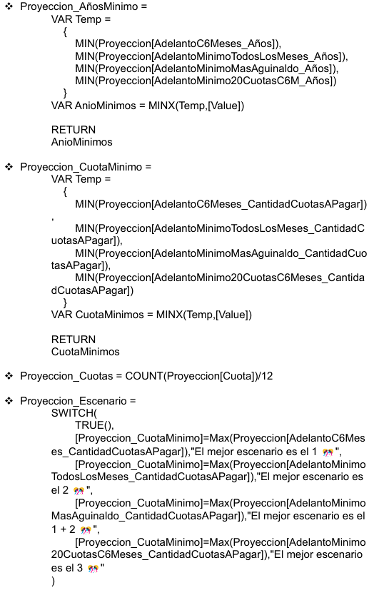 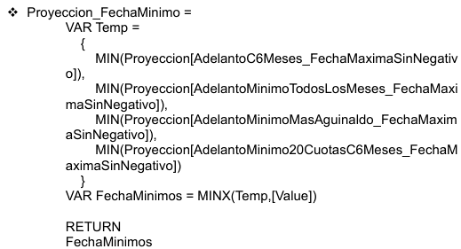- Tablas:
Tabla proyección se realizo con Power Query, teniendo en cuenta la tabla Montos, y el % de aumento que tiene.
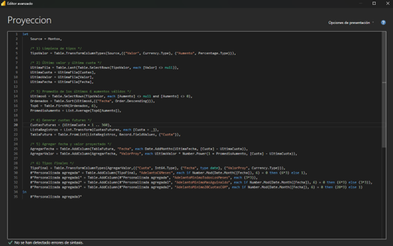La tabla “Capital” se realiza a mano, mes a mes, se va a ir escribiendo de manera manual el monto, ya que el mismo depende de muchos factores para el aumento.
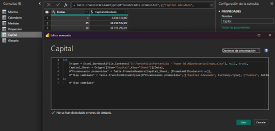La tabla “Montos”, si bien, se van cargando los montos de manera manual todos los meses, el % de aumento se calcula aquí y para ello se tuvo que crear una columna con el valor del monto anterior.
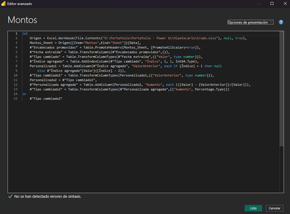 -
Vista de modelo
-
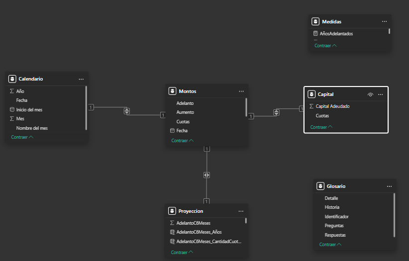
Alcance del informe:
- El alcance de este reporte es para que puedas visualizar facilmente como vas con el crédito, cual es el mejor método para poder pagarlo y cuando se podría terminar de pagar.
- Los usuarios finales podrían llegar a ser:
- ⭐Personas que deseen sacar un préstamo hipotecario.
- ⭐Personas que ya tengan el crédito hipotecario.
- ⭐Personas que estén en el programa del procrear.